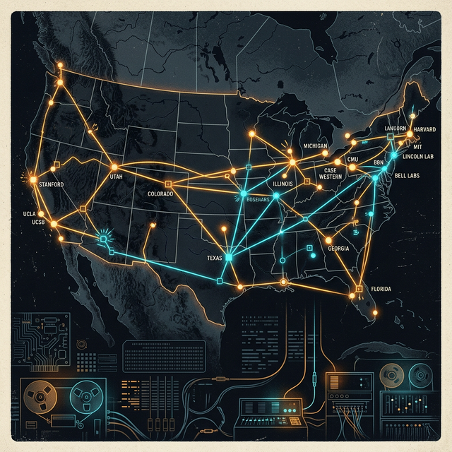
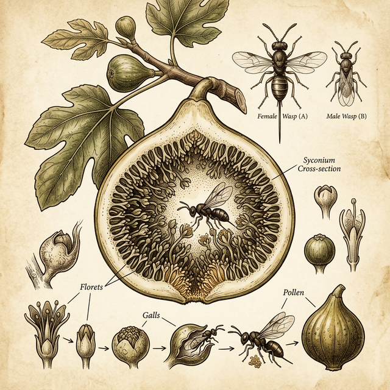

[ PROFILE_003 · SEEDSMAN ]
Man-Computer Symbiosis · 人机共生
1915.03.11 — 1990.06.26
每一场伟大的革命背后，都有一个远见。而我们这个时代最伟大的革命之一——个人计算机革命背后的远见，属于 J.C.R. Licklider。他不是工程师，没有创办公司，也没有写过代码；但他是一个执着的理想主义者，深刻洞见了个人与计算机交互方式中所蕴藏的巨大潜力。
在计算机科学的殿堂里，如果说图灵赋予了计算机灵魂，冯·诺依曼搭建了骨架，那么 Lick 则为计算机指明了未来的活法。
1915年出生于圣路易斯的 Licklider，最初的身份是心理学家。在哈佛和 MIT 工作期间，他的研究课题是心理声学——研究人类大脑如何处理声音。当时的计算机是冰冷且笨拙的算盘，待在恒温机房里，吞噬着打孔卡片。
1957年，Licklider 做了一个有趣的自我实验：他记录了自己一天的工作，发现 85% 的时间都花在查资料、画图表、做计算等琐事上，真正的思考时间少得可怜。他意识到：如果机器能分担这些琐事，人类的智力将被无限放大。
在 BBN 公司接触到 PDP-1 计算机后，Licklider 被震撼：他发现通过键盘和屏幕，人类可以实时与机器对话。他不再满足于数据处理，而是追求模型构建——让机器不仅计算结果，还能帮助人类完善假设。
1960年，Licklider 发表了震惊世人的论文《人机共生》。在那个计算机被视为超级会计的年代，他大胆预言：计算机不应是取代人的对手，而应是增强人的器官。
Sputnik 卫星的发射促成了 ARPA 的诞生。Licklider 于 1962 年出任其信息处理技术办公室的首任主管，挥舞着支票簿，寻找那些和他一样疯狂的年轻人。他给同事们发了一份备忘录，标题是 "致银河系计算机网络成员"——这种去中心化的愿景，正是 ARPANET（互联网的前身）最初的蓝图。

银河系计算机网络 → ARPANET → 今天的互联网
Licklider 最伟大的成就，不在于发明了某个特定的硬件，而在于他播种了思想。他资助了 Douglas Engelbart，支持了 Project MAC，培养了一整代计算机先驱。他像美国民间的苹果佬 Johnny Appleseed 一样，在全美高校洒下互动计算的种子，然后退居幕后，看着这些种子长成后来的苹果、微软和互联网。
1990年，Licklider 逝世。他没能亲眼看到移动互联网的疯狂盛景，但他早在 30 年前就预见到了这一切。每当你滑动手机屏幕获取实时反馈，或者在云端与同事协作时，你其实都生活在 Licklider 的"共生梦境"里。
Man-Computer Symbiosis：写于 1960 年，互联网未诞生，距今66年，但读起来像是昨天写的。

无花果树（Fig tree）与黄蜂（Wasp）的共生关系——人机共生的隐喻
他借用生物学中的共生关系引出人机共生：黄蜂的幼虫以无花果为食，无花果树则依赖黄蜂传粉。两个不同生物体紧密结合后，形成了一个比个体更强大、更具生命力的系统。
| 关系模式 | 描述 | 谁主导 |
|---|---|---|
| 机械延伸人 | 机器是人手臂的延伸，如锤子、吊车 | 人完全主导 |
| ⭐ 人机共生 | 人与计算机深度耦合，互补协作 | 人设目标，机器处理细节 |
| 人工智能 | 机器独立思考，取代人 | 机器主导 |
💡 85% 的时间花在了准备思考上
Licklider 的自我时间实验表明：真正的思考——洞察、判断、创造——只占一小部分。而准备工作（查资料、画图表、做计算）恰恰是计算机最擅长的。把这部分外包给机器，人才能专注于真正属于人的那部分。
| 维度 | 人类 | 计算机 |
|---|---|---|
| 速度 | 慢 | 极快 |
| 精确性 | 会犯错 | 精确 |
| 灵活性 | 极高，可随机应变 | 低，受预编程限制 |
| 语言 | 冗余、模糊、面向对象 | 精确、二进制、无歧义 |
| 创造力 | 有 | 没有（当时） |
差异越大，协同收益越大。如今这个框架也是 AI 时代争论的焦点：AI 是要取代人，还是增强人？Licklider 在1960年就站定了立场：在可预见的未来，人机协作优于任何一方单独行动。
1. 分时系统（Time-Sharing） ✅ 已实现 → 今天是云计算 2. 内存硬件 ✅ 已实现 → 从 KB 到 TB 3. 内存组织（检索结构） ✅ 已实现 → 数据库、搜索引擎 4. 编程语言 ✅ 已实现 → 从汇编到 Python 到自然语言 5. 输入输出设备 ✅ 已实现 → GUI、触控、语音识别
1960 → 1960s
今日形态：云计算，AWS / Azure，每一个 SaaS 都是分时系统。
✅ 完全实现1960 → 1969/1991
ARPANET 1969年，互联网1991年。互联网 + 云计算 + CDN 全球节点，几乎逐字实现。
✅ 完全实现1960 → 2020s
给计算机的指令应指定目标而非路径。今日形态：对 ChatGPT 说"帮我写个爬虫"。
✅ 完全实现1960 → 2017
Siri、讯飞、Whisper——识别准确率超越人类转录员。
✅ 完全实现1960 → 2010s
ElevenLabs、Azure TTS——克隆任何人声。
✅ 完全实现1960 → 2020s
Google 搜索、B-Tree 索引、RAG 向量数据库。
✅ 完全实现1960 → 1984
Sketchpad 1963、Alto GUI 1973、Mac 1984。今日：iPad Pencil、Figma。
✅ 完全实现1960 → 2000s
Miro、Figma 实时多人协作、Google Docs。
✅ 完全实现1960 → 2022
用 AI 头脑风暴、澄清需求、发现问题——而不只是执行。
✅ 完全实现1960 → 2026
通用 AGI 仍未实现，人机协作（Copilot 模式）依然是主流范式。
✅ 完全实现1963年4月23日撰写的备忘录被尊为互联网的创世文献。它提出的「银河系计算机网络」构想，最终促成了 ARPANET（互联网的前身）的诞生。虽然当时只连接了几台大型机，但他却用了一个足以跨越星系的宏大名词。
Licklider 并没有从通信协议出发，而是从心理学和管理学的角度切入。网络成功的关键在于参与者能否为了集体利益牺牲部分个人习惯。后来互联网协议（IP）的精神也是如此：底层的统一是为了上层更高的自由。
1963年他描绘了一个极其现代的场景：在终端前，用 A 机器的 JOVIAL 程序调用 B 机器上的 FORTRAN 子程序，并处理 C 磁盘上的数据。这精准预言了今天的远程过程调用（RPC）、云端协作和跨语言编程。
他将网络互联上升到文明沟通的高度：「你如何让两个不相关的智慧生物开始交流？网络控制语言与分时控制语言是同一种东西吗？」
由 M. Mitchell Waldrop 撰写的关于 Licklider 对个人电脑革命愿景的著作，讲述了计算机革命诞生的故事。正是这个人，改变了我们对计算机是什么、可以是什么的认知。
密苏里男孩
最后的转型
新型人类
犯错的自由
无花果树与黄蜂的故事
环绕计算机的种种现象
银河系计算机网络
活在未来
Lick 的孩子们